O que é a UML
A UML (Unified Modeling Language, ou linguagem de modelagem unificada) é uma linguagem gráfica para descrever sistemas de software: que partes existem, como elas se relacionam e como se comportam ao longo do tempo. É uma norma mantida pela OMG (Object Management Group). A versão atual é a 2.5.1, publicada em dezembro de 2017. [2] [3]
Ela nasceu da união de três métodos de orientação a objetos. Grady Booch e James Rumbaugh juntaram as suas notações na Rational Software, e Ivar Jacobson entrou na equipe em 1995. A OMG adotou a UML como padrão em 1997, e a ISO a publicou como norma ISO/IEC 19501 em 2005. [3] [4]
Uma comparação ajuda: a UML é para o software o que a planta baixa é para uma casa. A planta não levanta paredes, mas deixa arquiteto, engenheiro e cliente conversarem sobre a mesma coisa antes de gastar tijolo.
Este tutorial explica a teoria com o UML Studio, um app em um único arquivo HTML que desenha os 14 diagramas da UML 2.5.1, verifica erros comuns, simula os diagramas de comportamento e gera a documentação em PDF. [1]
Palavras que você vai ver o tempo todo
- Modelo
- A descrição do sistema. Um modelo pode ter muitos diagramas.
- Diagrama
- Uma vista do modelo, que mostra só uma parte dele, com um propósito.
- Classe
- Um tipo de coisa: Cliente, Pedido, Livro. Tem atributos (dados) e operações (comportamento).
- Objeto
- Uma instância concreta de uma classe: a cliente Ana, o pedido 1001.
- Relacionamento
- Uma ligação entre elementos: associação, generalização, dependência e outras.
- Multiplicidade
- Quantos objetos participam de uma ligação:
1,0..1,0..*,1..*. - Estereótipo
- Uma palavra entre « » que dá um significado extra a um elemento, como «interface» ou «entity».
Para que modelar
Modelar é pensar no papel antes de pensar no código. Um diagrama mostra em uma página o que levaria horas para descobrir lendo programas, e é barato de mudar: apagar uma caixa custa um segundo, refazer um módulo custa dias.
Martin Fowler descreve três jeitos de usar a UML: como esboço, para discutir uma ideia; como planta, um projeto detalhado para outra pessoa construir; e como linguagem de programação, quando o modelo vira código. [5] Para quem está começando, o esboço é o melhor ponto de partida: poucos elementos, só o que ajuda a conversa.
“Preciso usar os 14 diagramas”
Não. Escolha o diagrama pela pergunta que você quer responder. Muitos projetos vivem bem com classes, casos de uso e sequência.
“Quanto mais detalhe, melhor”
Detalhe demais esconde a ideia. Mostre o que importa para quem vai ler; o resto fica no código ou em outro diagrama.
“UML é só para sistemas enormes”
Um esboço de cinco caixas também é UML, e muitas vezes é o que mais ajuda.
“O diagrama substitui a conversa”
O diagrama apoia a conversa. Se ninguém o entende sem você explicar, simplifique.
Para fixar
- UML é uma linguagem gráfica padronizada pela OMG; a versão atual é a 2.5.1.
- Ela diz como desenhar, não o processo a seguir.
- Comece com esboços pequenos, com um propósito claro.
Os 14 diagramas
A especificação organiza os diagramas em dois grandes grupos. [2] Os de estrutura mostram o que o sistema é: as peças e como elas se ligam, sem tempo. Os de comportamento mostram o que o sistema faz: ações, estados e mensagens. Dentro do comportamento há um subgrupo, os diagramas de interação, focados nas mensagens trocadas entre participantes.
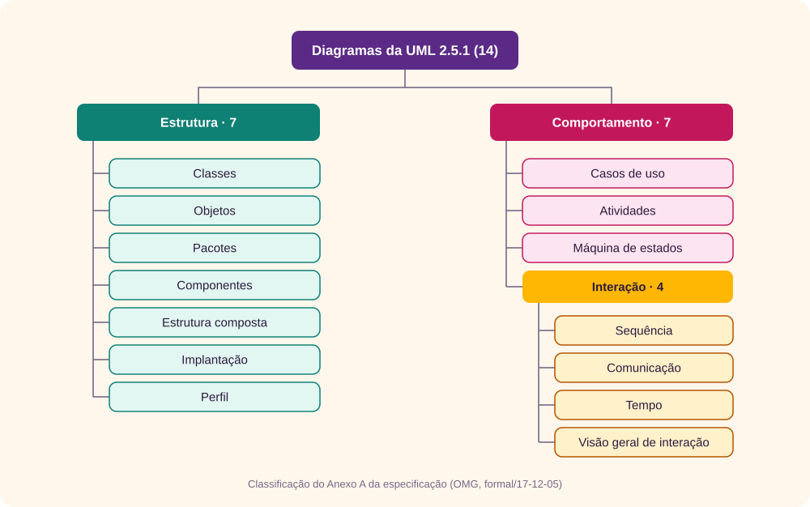
| Diagrama | Pergunta que responde |
|---|---|
| Classes | Quais tipos de coisa existem, o que cada um sabe e como se ligam? |
| Objetos | Como fica um exemplo concreto, num momento? |
| Pacotes | Como o modelo se divide em partes e quem depende de quem? |
| Componentes | Quais peças substituíveis formam o sistema e que interfaces oferecem e usam? |
| Estrutura composta | Como é o interior de uma peça: partes, portas e conexões? |
| Implantação | Em que máquinas e ambientes cada artefato roda? |
| Perfil | Como adaptar a UML a um domínio com estereótipos próprios? |
| Casos de uso | Quem usa o sistema e para quê? |
| Atividades | Qual é o passo a passo de um processo, com decisões e paralelismo? |
| Máquina de estados | Em que estados um objeto pode estar e o que o faz mudar? |
| Sequência | Em que ordem os participantes trocam mensagens? |
| Comunicação | Quem fala com quem, e em que ordem numerada? |
| Tempo | Quando cada participante muda de estado, num eixo de tempo? |
| Visão geral de interação | Em que ordem as interações acontecem, com decisões entre elas? |
Conheça o UML Studio
Abra o UML Studio. Na primeira vez, ele traz um exemplo de cada um dos 14 diagramas, prontos para explorar.
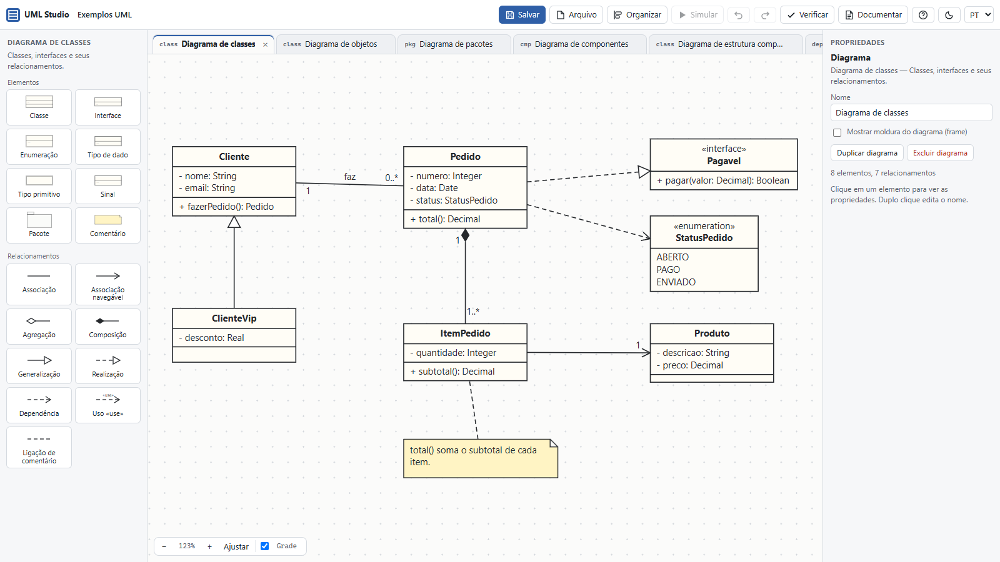
| Área | Para que serve |
|---|---|
| Barra superior | Salvar, menu Arquivo (exportar e importar), Organizar, Simular, Verificar, Documentar, ajuda, tema claro ou escuro e idioma. |
| Abas | Um diagrama por aba. O + cria outro; duplo clique renomeia; arrastar muda a ordem; o × exclui. |
| Paleta | Os elementos e relacionamentos do tipo de diagrama aberto. Clique em um e depois no quadro, ou arraste-o para o quadro. |
| Quadro | Onde você desenha. A rolagem move; Ctrl + rolagem amplia. |
| Propriedades | Tudo sobre o item selecionado: nome, estereótipo, atributos, multiplicidades, guardas. |
Criar um diagrama
Clique no + ao lado das abas. O diálogo mostra os 14 tipos nos três grupos, com uma frase sobre cada um. Marque Começar com um exemplo se quiser partir de um modelo pronto.
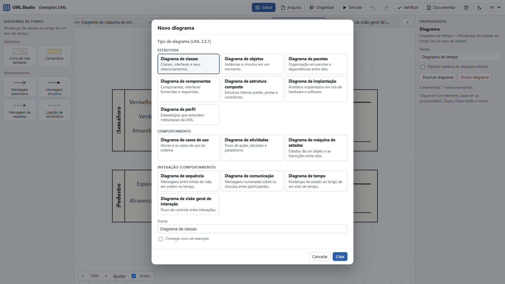
Onde ficam os seus dados
- Dentro do próprio arquivo. Como no TiddlyWiki, Salvar grava o arquivo HTML com os diagramas dentro. No Chrome e no Edge você escolhe o arquivo uma vez e as próximas gravações o substituem; nos outros navegadores é baixada uma cópia nova, que substitui a antiga.
- Rascunho no navegador. Até você salvar, as mudanças ficam guardadas no navegador e são oferecidas de volta se a página fechar.
- Nada sai do seu computador. O arquivo bloqueia conexões de rede.
Seu primeiro diagrama: uma biblioteca
Vamos modelar uma biblioteca pequena: livros, os exemplares físicos de cada livro, os leitores e os empréstimos. Siga os passos no app.
- Clique no + das abas, escolha Diagrama de classes, digite o nome
Bibliotecae clique em Criar. - Na paleta, clique em Classe e depois no quadro. A caixa de nome abre sozinha: digite
Livroe tecle Enter. - No painel de propriedades, em Atributos, escreva um por linha:
- titulo: Stringe- isbn: String. - Repita para mais três classes:
Exemplar(abaixo de Livro, com- codigo: String),Leitor(à direita, com- nome: String) eEmpréstimo(abaixo de Leitor, com- data: Datee- devolucao: Date). - Na paleta, escolha Composição e arraste de Livro até Exemplar. Nas propriedades, ponha
1na multiplicidade da origem e1..*na do destino. - Escolha Associação e arraste de Leitor até Empréstimo, com multiplicidades
1e0..*. - Escolha Associação navegável e arraste de Empréstimo até Exemplar, com
1no destino. - Clique em Livro, segure Shift e clique em Leitor. Abra Organizar e escolha Alinhar ao topo.
- Clique em Verificar. O app deve dizer que não encontrou problemas.
- Tecle Ctrl+S para gravar o diagrama dentro do arquivo.
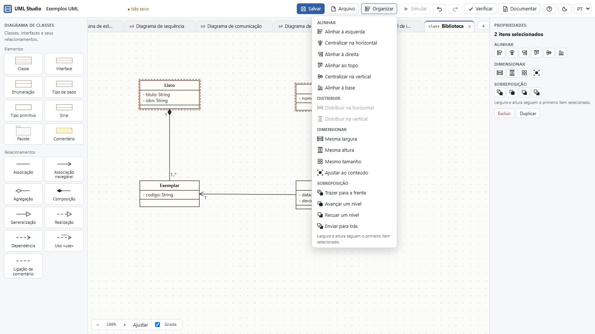
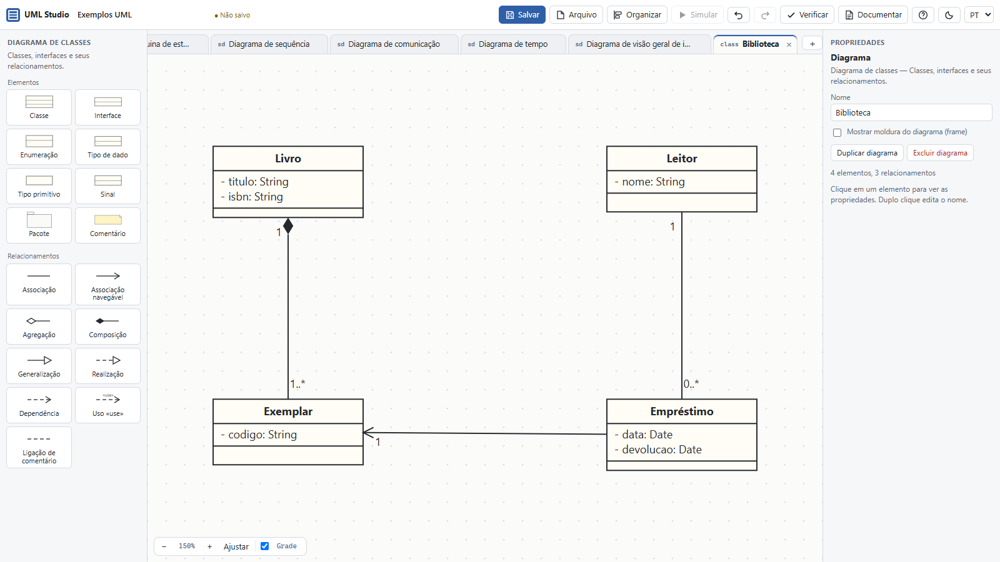
Como ler o que você desenhou
- Livro ◆— Exemplar, 1 e 1..*: cada livro tem um ou mais exemplares, e cada exemplar pertence a exatamente um livro. O losango cheio é composição: se o livro sai do acervo, os seus exemplares saem junto. [2]
- Leitor — Empréstimo, 1 e 0..*: um leitor pode ter nenhum ou muitos empréstimos; cada empréstimo é de um leitor.
- Empréstimo → Exemplar, 1: cada empréstimo é de um exemplar, e a seta diz que, a partir do empréstimo, se chega ao exemplar.
Repare que o empréstimo liga o leitor ao exemplar, não ao livro: quem sai da estante é uma cópia física. Esse tipo de pergunta, “é o livro ou o exemplar?”, é exatamente o que a modelagem obriga a responder cedo.
↑ Voltar ao topoDiagrama de classes
É o diagrama mais usado. Cada classe é um retângulo com até três compartimentos: o nome, os atributos e as operações.
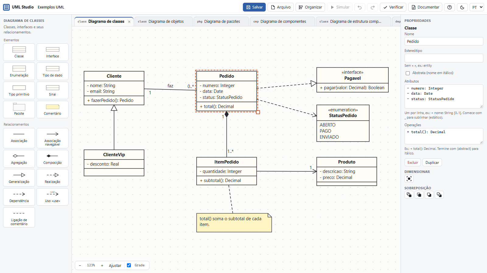
Atributos e operações
Um atributo se escreve visibilidade nome: Tipo [multiplicidade] = valor inicial, e uma operação, visibilidade nome(parâmetros): TipoDeRetorno. Só o nome é obrigatório. A visibilidade usa quatro símbolos: [2]
| Símbolo | Visibilidade | Quem enxerga |
|---|---|---|
+ | pública | qualquer um |
- | privada | só a própria classe |
# | protegida | a classe e as suas subclasses |
~ | de pacote | quem está no mesmo pacote |
No app, escreva um item por linha. Comece a linha com _ para sublinhar (membro estático) e termine uma operação com {abstract} para itálico. Uma classe abstrata tem o nome em itálico: marque Abstrata.
Além da classe comum, a paleta tem interface (um contrato de operações), enumeração (uma lista fechada de valores), tipo de dado, tipo primitivo e sinal.
Os relacionamentos
| Relacionamento | Desenho | Leia como |
|---|---|---|
| Associação | linha contínua | “está ligado a”. Com nome, papéis e multiplicidades nas pontas. |
| Associação navegável | linha com seta aberta | “conhece”: a partir da origem se chega ao destino. |
| Agregação | losango vazio no lado do todo | “tem”, num sentido fraco. A própria especificação diz que o significado exato varia conforme a área e quem modela. [2] |
| Composição | losango cheio no lado do todo | “é feito de”: a parte pertence a um só todo e é apagada com ele. [2] |
| Generalização | triângulo vazio apontando para a classe geral | “é um”: ClienteVip é um Cliente e herda o que ele tem. |
| Realização | tracejado com triângulo vazio | “cumpre o contrato”: Pedido implementa a interface Pagavel. |
| Dependência | tracejado com seta aberta | “usa” ou “depende de”: uma mudança no destino pode afetar a origem. |
Multiplicidades
| Escrita | Significa |
|---|---|
1 | exatamente um |
0..1 | nenhum ou um |
* ou 0..* | nenhum ou muitos |
1..* | pelo menos um |
2..4 | de dois a quatro |
Leia sempre a multiplicidade do lado oposto: em Cliente 1 —— 0..* Pedido, o 0..* perto de Pedido diz quantos pedidos um cliente faz.
Para fixar
- “É um” vira generalização; “tem” ou “conhece” vira associação.
- Use composição só quando a parte não existe sem o todo.
- Multiplicidade se lê do lado oposto da linha.
Diagrama de objetos
Se o diagrama de classes é a regra, o de objetos é um exemplo: uma fotografia do sistema em um instante. Cada caixa é uma instância, com o nome sublinhado no formato nome : Classe, e mostra valores (slots) em vez de tipos. As linhas são vínculos (links), instâncias das associações.
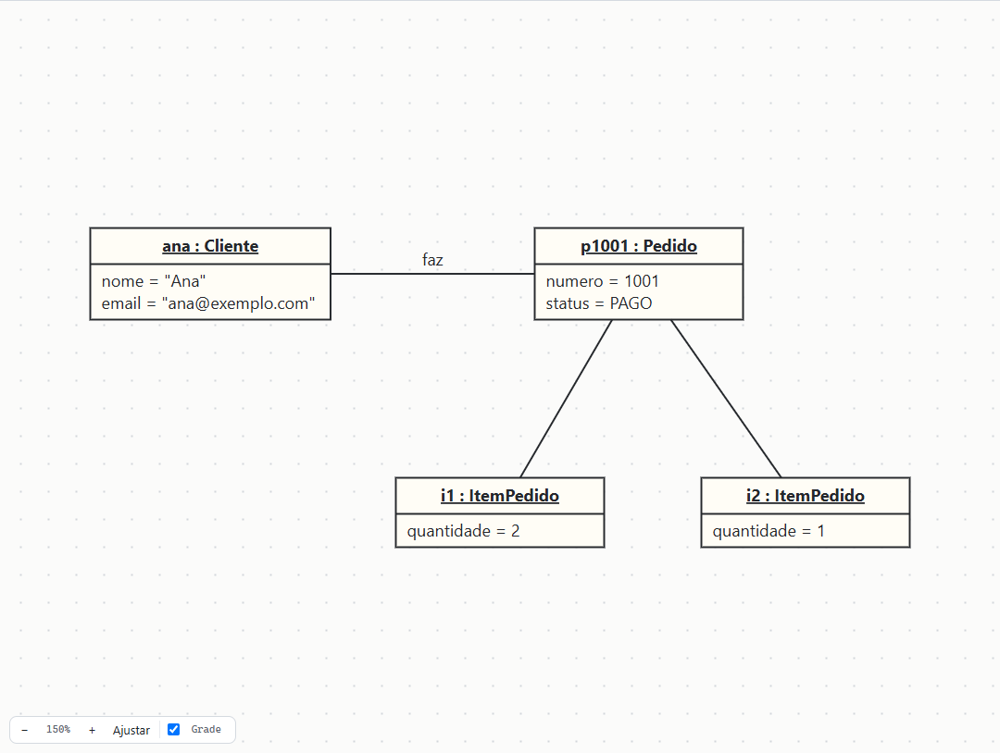
Use-o para testar um diagrama de classes com um caso real. Se o exemplo não cabe nas regras (um pedido sem cliente, por exemplo), a multiplicidade ou a própria classe estão erradas.
↑ Voltar ao topoPacotes e perfis
Um pacote é uma pasta: agrupa elementos e dá um espaço de nomes a eles. O diagrama de pacotes mostra como o modelo se divide e quem depende de quem. As dependências mais comuns são «import» (o pacote passa a enxergar os nomes públicos do outro), «access» (o mesmo, só para uso interno) e «merge» (junta o conteúdo de dois pacotes). [2]
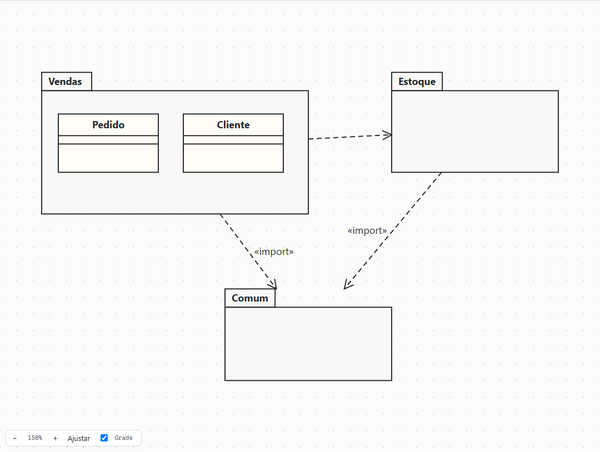
Um perfil adapta a UML a um domínio. Ele define estereótipos que estendem metaclasses da própria UML. A extensão é uma linha com triângulo cheio, do estereótipo para a metaclasse; a aplicação do perfil a um pacote é uma dependência «apply». [2]
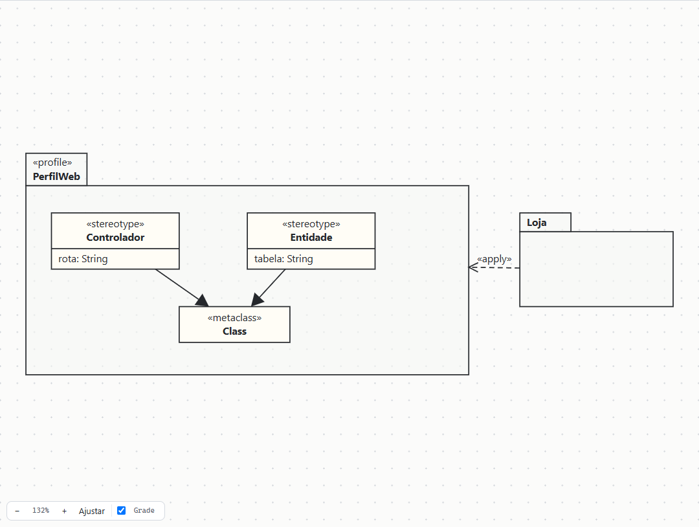
Componentes, estrutura composta e implantação
Componentes
Um componente é uma peça substituível do sistema, que se conhece pelas interfaces: as que ele fornece (o pirulito, um círculo) e as que ele requer (o soquete, um meio círculo). Quando um soquete encaixa num pirulito, temos um conector de montagem. Uma porta é um ponto de interação na borda do componente, e um artefato (um arquivo) pode manifestar o componente.
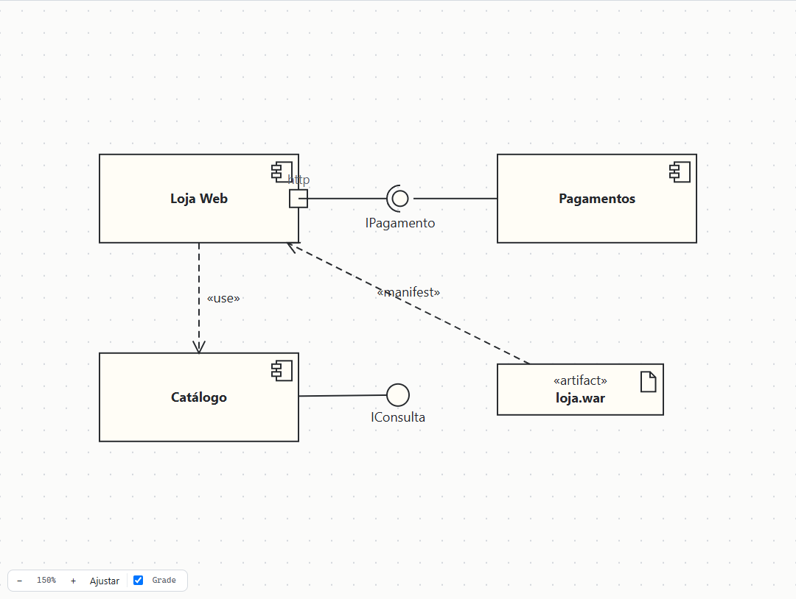
Estrutura composta
Mostra o interior de uma classe: as partes (papéis que outros objetos ocupam lá dentro), as portas e os conectores entre elas. Um conector de delegação leva o que chega pela porta até a parte que trata.
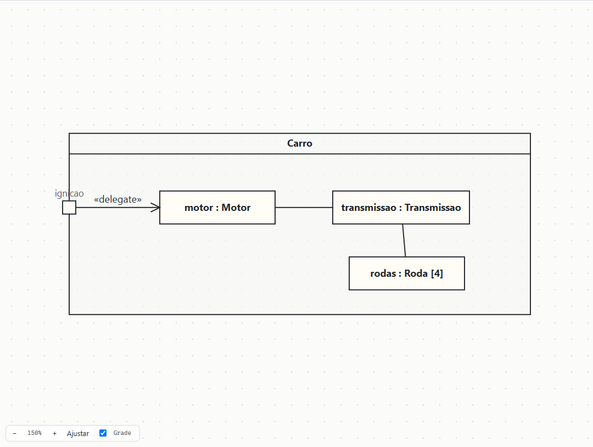
Implantação
Mostra onde o software roda. Nós são caixas em 3D: um «device» é hardware, um «executionEnvironment» é um ambiente de software, como um servidor de aplicação. Artefatos ficam dentro dos nós em que estão implantados, e os caminhos de comunicação ligam os nós.
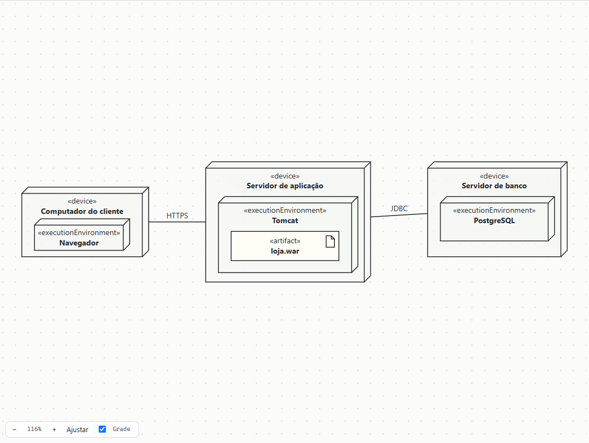
Casos de uso
Um caso de uso é um objetivo que alguém atinge com o sistema: “Comprar produto”, “Emprestar livro”. Quem tem o objetivo é o ator, o boneco: uma pessoa, um papel ou outro sistema. O retângulo é o sujeito, o sistema em estudo.
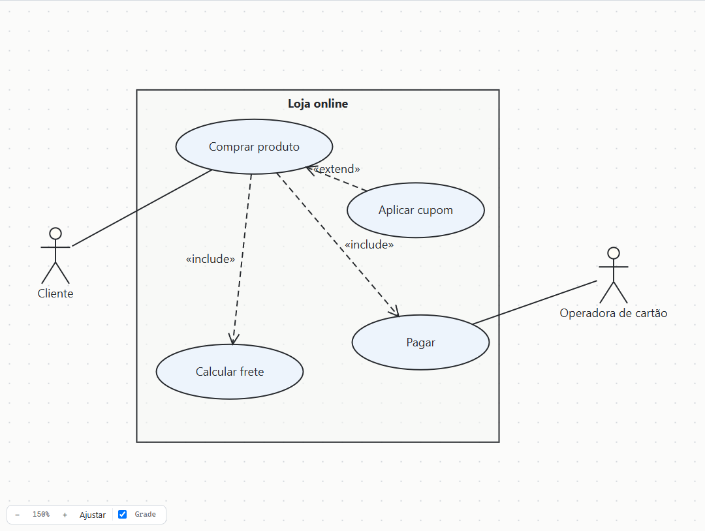
| Ligação | Sentido da seta | Quando usar |
|---|---|---|
| Associação | sem seta | o ator participa do caso de uso |
| «include» | do caso base para o incluído | o base sempre executa o incluído |
| «extend» | do caso que estende para o base | comportamento opcional, sob uma condição |
| Generalização | do específico para o geral | um ator ou caso de uso especializa outro |
Atividades
O diagrama de atividades é o fluxograma da UML: mostra os passos de um processo, as decisões e o que acontece em paralelo. As partições (raias) mostram quem faz cada passo.
| Elemento | Desenho | Significa |
|---|---|---|
| Nó inicial | círculo cheio | onde o fluxo começa |
| Ação | retângulo de cantos redondos | um passo |
| Decisão / junção | losango | escolhe um caminho pelas guardas [condição], ou junta caminhos alternativos |
| Bifurcação / união | barra grossa | abre caminhos paralelos, ou espera todos terminarem |
| Final de atividade | círculo com ponto | termina a atividade inteira |
| Final de fluxo | círculo com X | termina só aquele caminho |
A especificação define o comportamento das atividades com tokens, fichas que percorrem as setas: uma ação começa quando recebe fichas em todas as entradas e, ao terminar, oferece fichas nas saídas. [2] É isso que o botão Simular mostra.
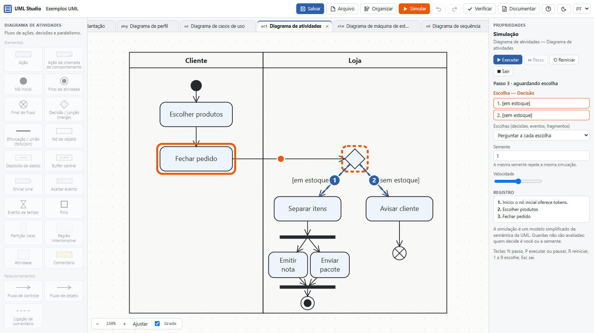
- Abra o exemplo de atividades e clique em Simular.
- Clique em Passo (ou tecle N) e acompanhe a ficha laranja.
- Na decisão, escolha [em estoque]. Veja a bifurcação dividir a ficha e a união esperar as duas ações.
- Clique em Reiniciar e escolha [sem estoque]: o final de fluxo encerra só aquele caminho.
No modo Sortear com a semente, o app escolhe por você. A mesma semente repete a mesma simulação, o que permite mostrar um caso a outra pessoa. As guardas não são avaliadas: quem decide é você ou a semente.
↑ Voltar ao topoMáquina de estados
Alguns objetos mudam de comportamento conforme a sua situação: um pedido aberto pode ser pago ou cancelado, mas um pedido enviado não. A máquina de estados mostra essas situações (estados) e o que faz o objeto passar de uma para outra (transições).
O rótulo de uma transição segue o formato evento [guarda] / efeito: quando o evento chega e a guarda é verdadeira, o efeito executa e o objeto muda de estado. Dentro do estado, entry / roda ao entrar, do / enquanto está nele e exit / ao sair. A especificação diz que cada evento é tratado até o fim antes do próximo (run-to-completion). [2]
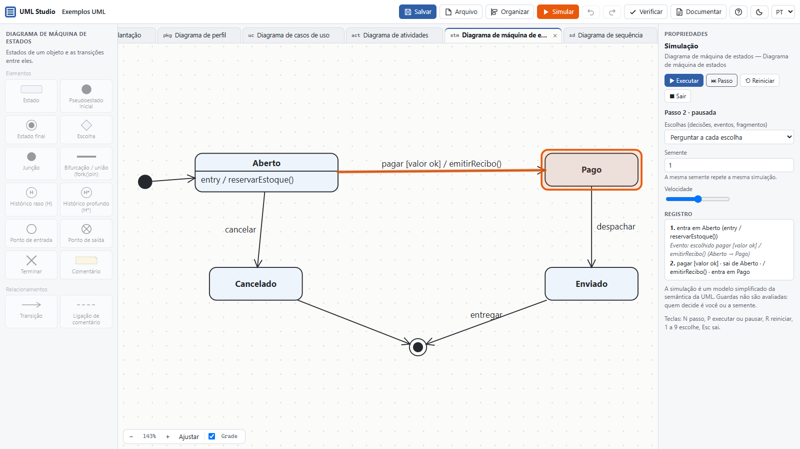
pagar [valor ok] / emitirRecibo(), o pedido está em Pago.Na simulação, o app lista os eventos possíveis a partir do estado atual. Escolha um e veja o registro: sai do estado, executa o efeito e entra no novo. Transições sem evento disparam sozinhas quando o estado termina. O app também trata estados compostos, escolha, histórico raso (H) e profundo (H*), bifurcação e união.
↑ Voltar ao topoSequência e comunicação
O diagrama de sequência conta uma história no tempo, de cima para baixo. Cada participante tem uma linha de vida tracejada; as setas entre elas são mensagens. Os retângulos estreitos sobre a linha mostram quando o participante está trabalhando (especificação de execução).
| Mensagem | Desenho | Significa |
|---|---|---|
| Síncrona | linha contínua, ponta cheia | quem chama espera a resposta |
| Assíncrona | linha contínua, ponta aberta | quem chama segue em frente |
| Resposta | tracejada, ponta aberta | o retorno de uma chamada |
| Criação | tracejada até a cabeça da linha de vida | o participante nasce ali |
| Destruição | termina num X | o participante deixa de existir |
Os fragmentos combinados são molduras com um operador no canto: alt (um entre vários caminhos), opt (opcional), loop (repetição), par (em paralelo), break (interrompe o restante) e neg (um caminho que não deve acontecer), entre outros. [2]
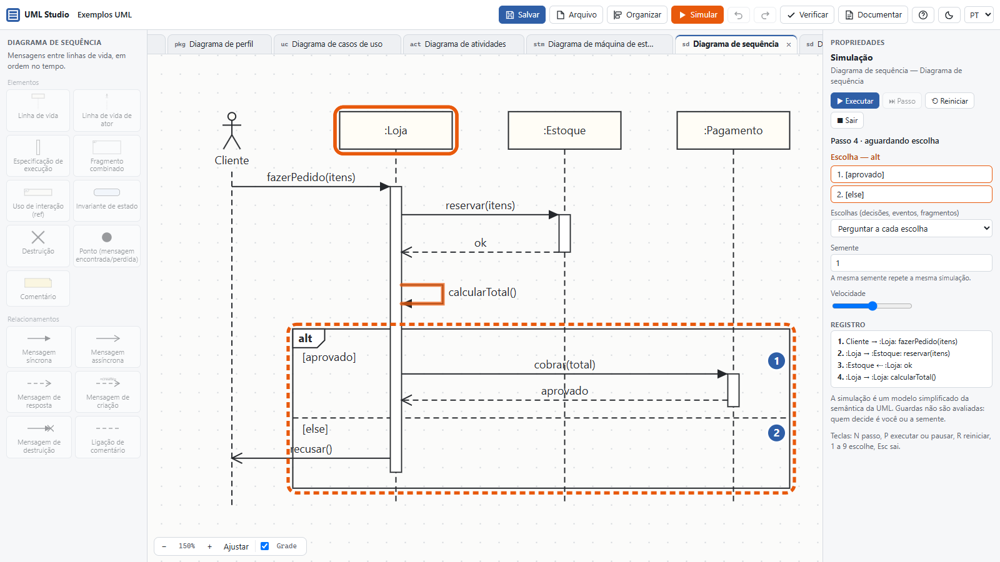
alt, a simulação pergunta qual operando executar.O diagrama de comunicação mostra as mesmas mensagens, mas organizadas pelos vínculos entre os participantes. A ordem vem da numeração: 1, depois 1.1 e 1.2, que acontecem dentro da mensagem 1.
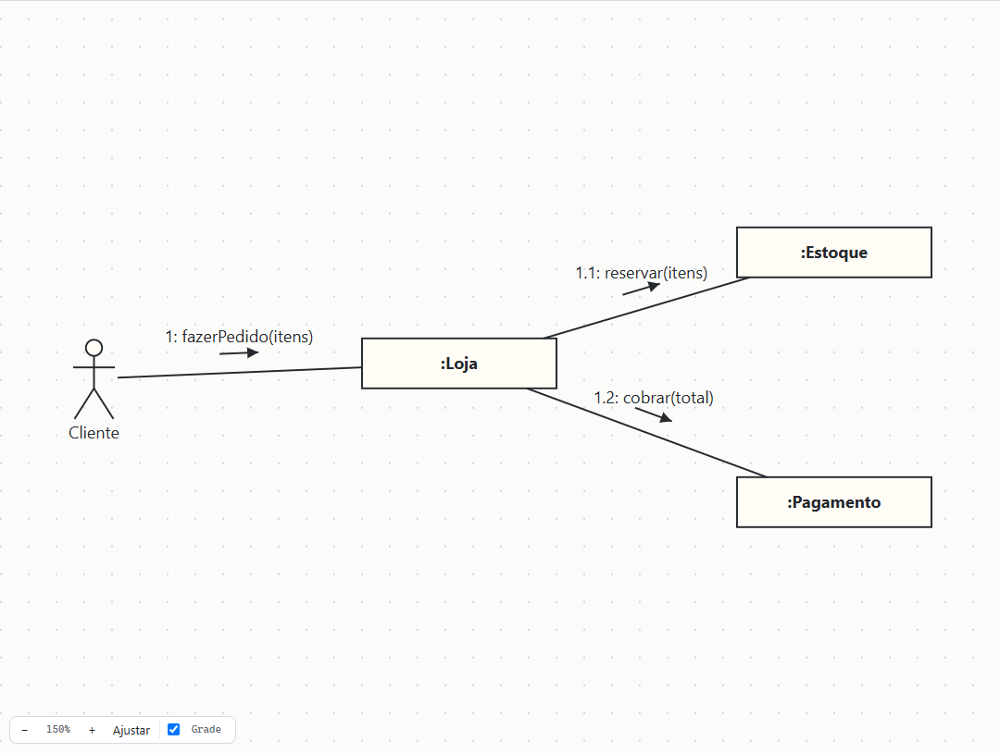
Tempo e visão geral de interação
O diagrama de tempo põe o tempo no eixo horizontal e os estados no vertical. É útil quando o momento importa: sistemas embarcados, protocolos, prazos. No app, escreva os estados de cima para baixo e as mudanças no formato tempo estado, uma por linha.
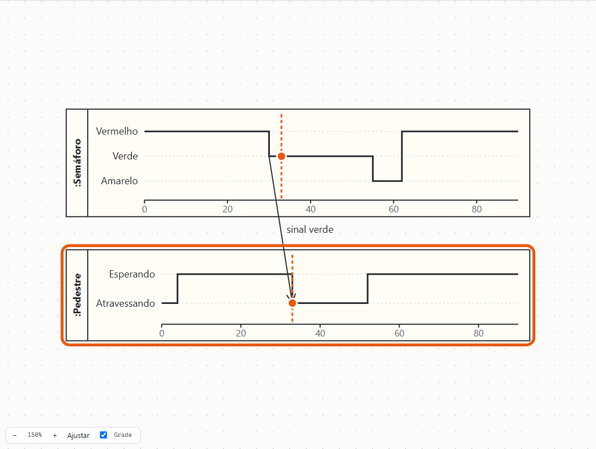
A visão geral de interação parece um diagrama de atividades, mas cada passo é uma interação inteira: uma referência (ref) a outro diagrama ou uma interação desenhada ali mesmo (sd).
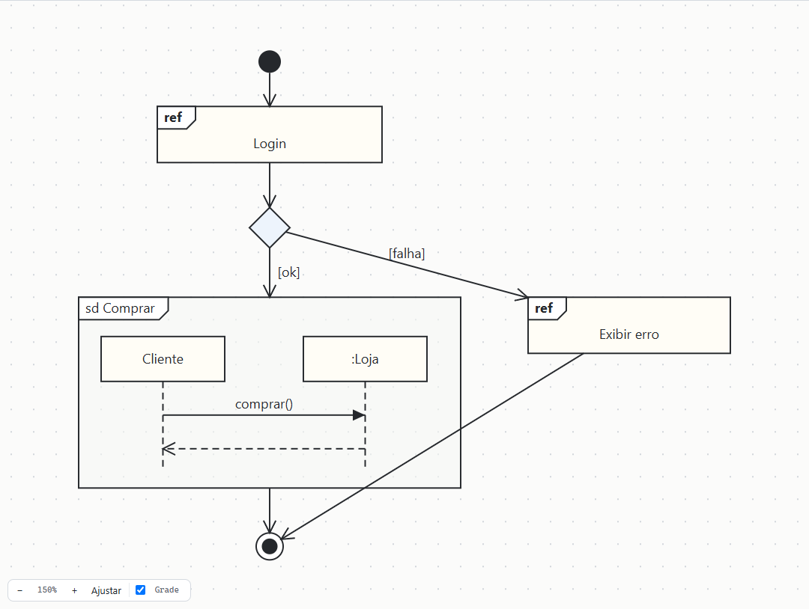
Organizar, verificar, documentar e salvar
Organizar
| Grupo | Comandos |
|---|---|
| Alinhar | esquerda, centro, direita, topo, meio e base (dois ou mais itens) |
| Distribuir | espaços iguais na horizontal ou na vertical (três ou mais) |
| Dimensionar | mesma largura, altura ou tamanho do primeiro item selecionado; ajustar ao conteúdo, que num contêiner envolve o que está dentro |
| Sobreposição | trazer para a frente, avançar, recuar e enviar para trás |
Verificar
O botão Verificar procura erros comuns: «include» ou «extend» fora de casos de uso, comentário ligado sem comentário, nó inicial com entradas, final com saídas, decisão que não decide nada, bifurcação mal formada, generalização entre tipos diferentes ou em ciclo, elementos sem nome e ações soltas. Clique num aviso para selecionar o elemento.
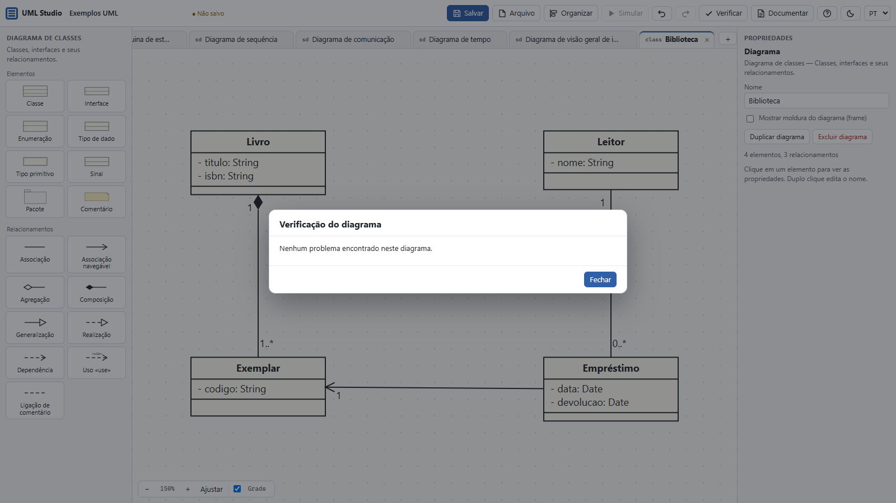
Documentar
O botão Documentar gera um PDF com capa, sumário com links, cada diagrama em desenho vetorial e, se quiser, as tabelas de elementos, de relacionamentos e o resultado da verificação. Escolha os diagramas, a orientação e o papel (A4 ou Carta).
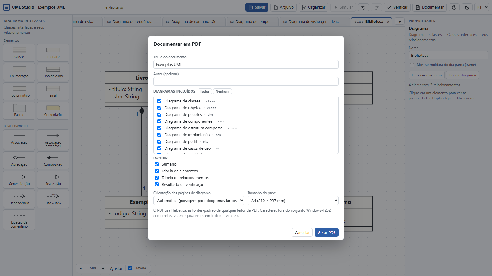
Salvar, exportar e importar
| Comando | O que faz |
|---|---|
| Salvar (Ctrl+S) | grava o próprio arquivo HTML com os diagramas dentro |
| Arquivo › Salvar como outro HTML | cria uma cópia em outro arquivo |
| Arquivo › Exportar SVG ou PNG | uma imagem do diagrama aberto, para slides e documentos |
| Arquivo › Exportar JSON | os dados do projeto, para guardar ou levar a outra cópia do app |
| Arquivo › Importar | acrescenta os diagramas de um JSON ou de outro HTML do UML Studio |
O app não exporta XMI, o formato de troca de modelos da OMG; para levar o modelo a outra ferramenta, use as imagens ou redesenhe.
↑ Voltar ao topoErros comuns de principiante
Generalização no lugar de associação
Pedido não “é um” Cliente; pedido “pertence a” um cliente. Herança só quando a frase “X é um Y” faz sentido.
Composição em tudo
O losango cheio diz que a parte morre com o todo. Um leitor não morre com a biblioteca: ali cabe uma associação.
Seta do «extend» invertida
O «include» sai do caso base; o «extend» sai do caso opcional e aponta para o base.
Caso de uso como tela ou passo
“Clicar em salvar” não é caso de uso. Um caso de uso é um objetivo completo do ator.
Sequência com tudo
Uma sequência com dezenas de mensagens não se lê. Conte um cenário por diagrama e use
refpara os detalhes.Esquecer as multiplicidades
Sem elas, ninguém sabe se o pedido pode ficar sem itens. Pergunte sempre “quantos, no mínimo e no máximo?”.
Diagrama sem pergunta
Antes de desenhar, escreva a pergunta que o diagrama responde. Se não há pergunta, talvez não precise do diagrama.
Atividade e estado misturados
Ação é algo que se faz (“Enviar pacote”); estado é uma situação (“Enviado”). Os nomes já mostram a diferença.
Atalhos de teclado
| Tecla | Ação |
|---|---|
| Ctrl+S | salvar no próprio arquivo |
| Ctrl+Z / Ctrl+Y | desfazer e refazer |
| Ctrl+C, Ctrl+V, Ctrl+D | copiar, colar e duplicar |
| Ctrl+A | selecionar tudo |
| Del | excluir a seleção |
| F2 ou duplo clique | renomear |
| setas (com Shift, passo maior) | mover a seleção |
| Tab | ir de um elemento ao próximo |
| Ctrl+] / Ctrl+[ | avançar ou recuar na sobreposição; com Shift, até a frente ou o fundo |
| Esc | cancelar a ferramenta, limpar a seleção ou sair da simulação |
| N, P, R, 1–9 | na simulação: passo, executar ou pausar, reiniciar e escolher uma opção |
Revisão rápida
Tente responder antes de abrir cada pergunta.
1. Quais são os dois grandes grupos de diagramas da UML?
Estrutura (o que o sistema é) e comportamento (o que ele faz). Os diagramas de interação são um subgrupo do comportamento.
2. Em Cliente 1 —— 0..* Pedido, quantos pedidos um cliente pode ter?
De nenhum a muitos. A multiplicidade se lê do lado oposto: o 0..* está perto de Pedido.
3. Qual a diferença entre agregação e composição?
Na composição, a parte pertence a um só todo e é apagada com ele. A agregação é uma relação de “tem” mais fraca, cujo significado exato varia.
4. O que significa - saldo: Decimal?
Um atributo privado chamado saldo, do tipo Decimal. O - diz que só a própria classe o enxerga.
5. Para onde aponta a seta do «extend»?
Do caso de uso que estende (o opcional) para o caso de uso base.
6. Em atividades, qual a diferença entre final de atividade e final de fluxo?
O final de atividade encerra tudo; o final de fluxo encerra só o caminho que chegou a ele.
7. Como se lê pagar [valor ok] / emitirRecibo()?
Quando chega o evento pagar e a guarda “valor ok” é verdadeira, o efeito emitirRecibo() executa e o objeto muda de estado.
8. Por que a simulação repete as mesmas escolhas?
Porque usa a mesma semente no modo Sortear com a semente. Troque a semente para ver outro caminho.
Referências
- Giovani Perotto Mesquita, “UML Studio”, aplicativo em um único arquivo HTML, giovanipm.github.io/uml-studio.html.
- Object Management Group, OMG Unified Modeling Language (OMG UML), Version 2.5.1, especificação formal/17-12-05, dezembro de 2017, omg.org/spec/UML/2.5.1.
- Object Management Group, “Unified Modeling Language”, página da especificação com o histórico de versões (1.1 em dezembro de 1997, 2.0 em julho de 2005, 2.5.1 em dezembro de 2017), acesso em 05/11/2026, omg.org/spec/UML.
- Wikipedia (em inglês), “Unified Modeling Language”, acesso em 05/11/2026, en.wikipedia.org/wiki/Unified_Modeling_Language. Divergência: a Wikipedia diz que a OMG adotou a UML 1.1 em novembro de 1997; a tabela da própria OMG [3] registra dezembro de 1997.
- Martin Fowler, UML Distilled: A Brief Guide to the Standard Object Modeling Language, 3ª edição, livro, Addison-Wesley, 2003, ISBN 978-0-321-19368-1.
- Grady Booch, James Rumbaugh, Ivar Jacobson, The Unified Modeling Language User Guide, 2ª edição, livro, Addison-Wesley, 2005, ISBN 978-0-321-26797-9.